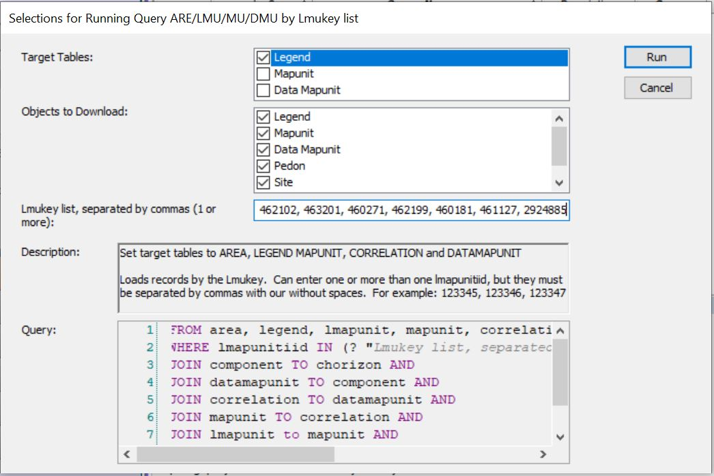
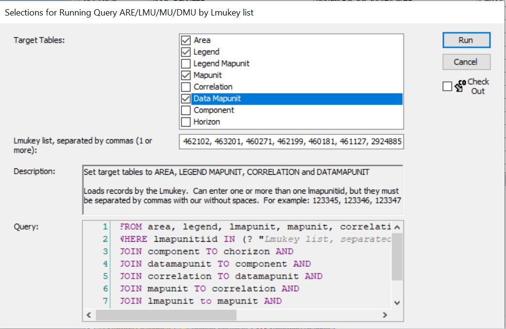
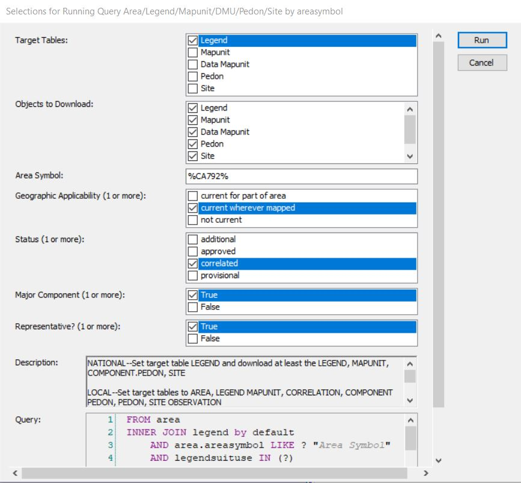
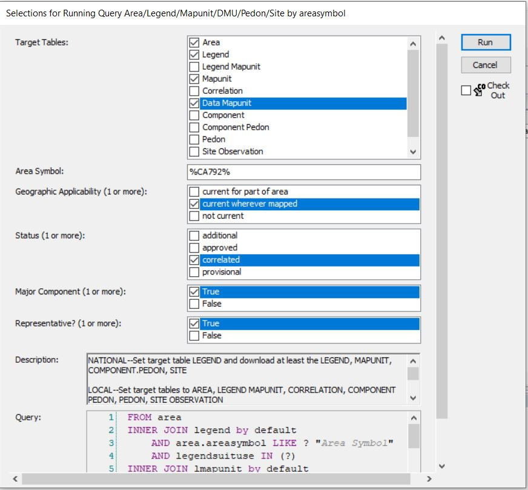
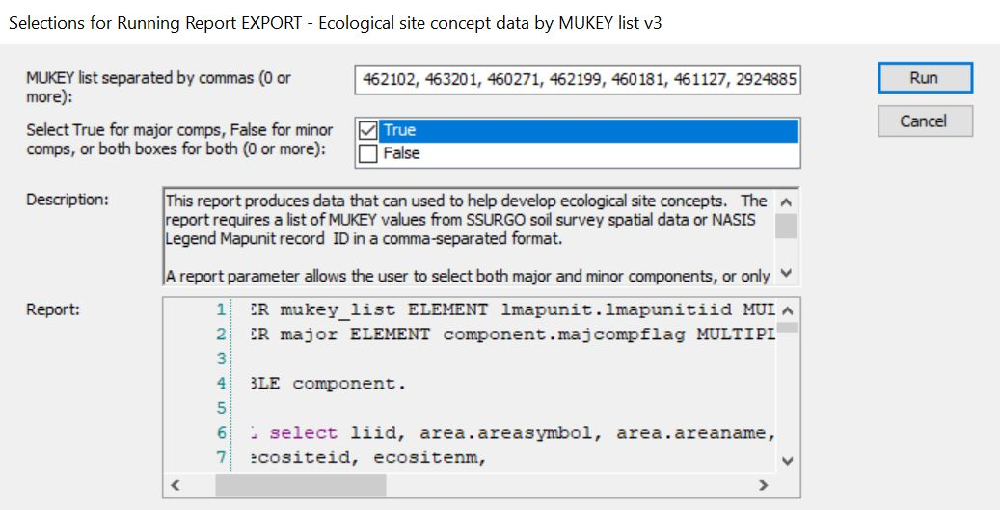

Chapter 3 Components
Components are one of the core concepts in the NRCS ecological workflow. Ecosites are correlated to components. This
3.1 What components are in an MLRA?
There are NASIS Queries that allow querying by MLRA. Unfortunately, this is not the best approach. See the section What mapunits are in an MLRA for an explanation of why. Spatial intersection of MLRA boundaries and mapunits is more reliable.
- Determine the mapunits in the MLRA using the Mapunits in MLRA tool
- Take the group of mapunits and enter them into Query > MLRA09_Temple > ARE/LMU/MU/DMU by Lmukey list.
Run against National Database: 
Run against Local: 
- Acquire the component names and component IDs using R:
Load the soilDB package and fetch NASIS data
library(soilDB)
my.components.MLRA <- fetchNASIS(from = "components")Look at component names - the head() function shows just the first six records. Remove the head() function to see all the component names
head(my.components.MLRA$compname)## [1] "Jokerst" "Doemill" "Rockstripe" "Ultic Haploxeralfs" "Butterbredt" "Butterbredt, eroded"Look at the component IDs
head(my.components.MLRA$coiid)## [1] "1047328" "1047328" "1047328" "1047329" "1047329" "1047329"3.2 What components are in a Soil Survey Area?
Queries by Soil Survey Area are much more reliable than queries by MLRA. As previously mentioned, queries by MLRA are not ideal because the mapunit overlap tables are imperfectly populated. The Soil Survey area corresponds to the legend, and this means that components are reliably associated with Soil Survey Areas. Therefore, beginning with a query is the preferred approach:
Run against National 
Run against Local 
Acquire component names and IDs using R.
Load the soilDB package and fetch NASIS data
library(soilDB)
my.components.SSA <- fetchNASIS(from = "components")Look at component names - the head() function shows just the first six records. Remove the head() function to see all the component names
head(my.components.SSA$compname)## [1] "Littlepete" "Ladderlake" "Terric Cryosaprists" "Mendel" "Lackey" "Pigchute"Look at the component IDs
head(my.components.SSA$coiid)## [1] "2045891" "2045891" "2045891" "2045891" "2045891" "2045891"3.5 What are the ecological characteristics of components?
One of the best ways to do this is a NASIS report: NASIS > Reports > MLRA02_Davis > EXPORT - Ecological site concept data by MUKEY list v3. This report takes mapunit keys (MUKEY) as input. If you are interested in all the components in an MLRA, refer to What mapunits are in an MLRA?. If you are interested in a Soil Survey Area ……
- Run against National 
- In the resulting output (html output in your browser), click anywhere, ctrl + a (select all), ctrl + c (copy)
- Open Excel, click in top left cell, ctrl + v (paste)
- Ctrl + a (select all), Insert > Table
Now you have a table with lots of ecological characteristics. You can use the column headers to filter in various ways. If you prefer to work in R, save this file as a .csv and read it into R.